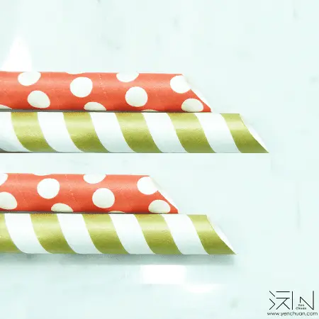
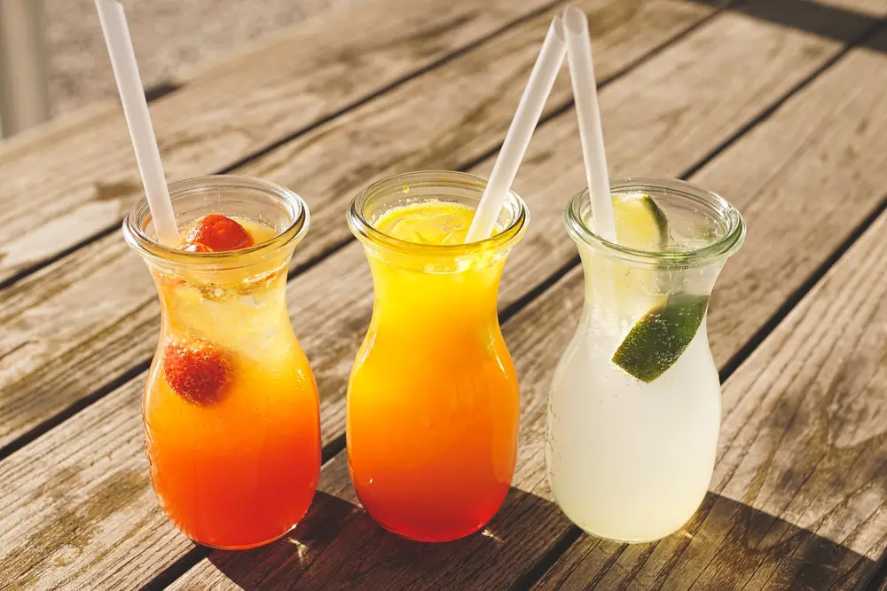
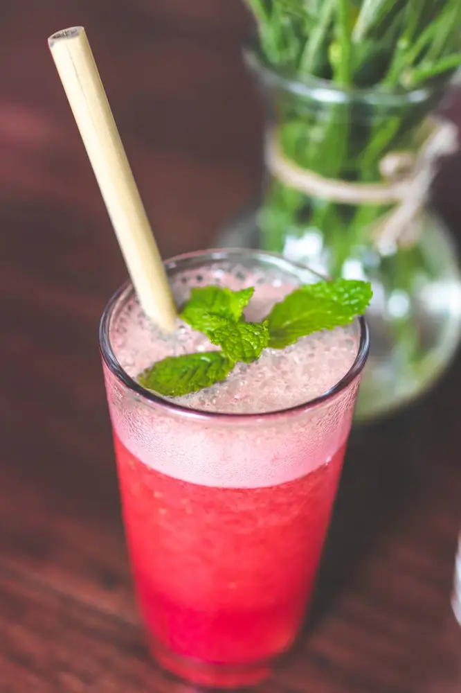

文章 / 飲品配方與資訊
Protect the environment with eco-friendly straws!
這篇是英文原文，尚未完成繁體中文翻譯。中文選單與相關商品連結不會切回英文介面。

查看英文原文（尚未翻譯）
Have you seen photos of “islands” of trash floating in the ocean? Turtles getting plastic straws stuck up their noses? These distressing images made more and more people concerned about how to protect the environment, and businesses are starting to switch to more eco-friendly packaging and utensils.
Want to play your part in protecting our planet? Yen Chuan is here to help – check out our different types of eco-friendly straws!

Paper straws
I know what you’re thinking – what’s so special about paper straws? They’re everywhere!
Well, have you ever had trouble with paper straws? Straws bending or getting smushed up instead of piercing the sealed lid? Going soggy minutes after you start drinking? Say goodbye to these troubles by using our paper straws!
Made with high-quality paper sourced from Sweden, our paper straws are tougher and more durable than regular paper straws. Notice anything different with the sharper end? Our straws have reinforced, tapered ends to make them pierce sealed lids more easily.
Available in solid colour or patterned – contact us for details!

PLA straws
Another common eco-friendly material is PLA, a type of plastic that can be made using plant starch such as corn, cassava or sugarcane pulp.
Since it’s biodegradable, people consider PLA an eco-friendly plastic. Want the transparent look of plastic straws but also want to protect our planet? Our PLA straws are for you!
Bamboo fibre straws
Have you heard of bamboo fibre straws? They are the newest kid in the block among other eco-friendly straws.
Don’t get this mixed up with bamboo straws, these straws are made of natural bamboo fibres, and look similar to paper straws. Unlike paper straws however, bamboo fibre straws don’t get soggy when wet, and are more biodegradable!
Want to try this new eco-friendly straw? Now’s your chance!

Want to learn more?
Have any questions about our eco-friendly products? Want us to print your logo?